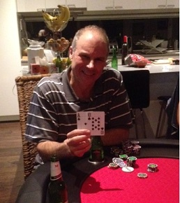

.....New table....new blinds...new rules....new winner
| Date | Location | Game | Players |
|---|---|---|---|
| {{tournaments.tournamentOne[0].eventDate}} | {{tournaments.tournamentOne[0].location}} | {{tournaments.tournamentOne[0].tournament}} | {{tournaments.tournamentOne[0].noOfPlayers}} |
| Position | Name | Points |
|---|---|---|
| {{result.position}}{{positionSuffix(result.position)}} | {{result.name}} | {{result.points}} |
| Bounty Winner |
|---|
| No-one! Bounty jackpot rolls over to the next tournament! |
| Position | Name | Played | Won | Win Ratio | Ave Points | Ave Position | Points |
|---|---|---|---|---|---|---|---|
| {{$index + 1}}{{positionSuffix($index + 1)}} | {{result.name}} | {{result.played}} | {{result.won}} | {{result.won / result.played * 100 | number:2}} % | {{result.points / result.played | number:2}} | {{result.averagePosition | number:2}} | {{result.points}} |
|  |
| Winners are grinners! |
The official unveiling of the new 10 seater table was well received with players gazing in wonderment at their investment. The arm rests were tested and there was initial dismay when the more refined players realised that the cup holders were not wide enough to support the girth of a wine glass. Paul and Brian thinking outside of the square soon solved the dilemma when the cup holders were removed and happy wine connoisseurs could safely store their receptacles.
The game commenced with the new single tournament and longer blind levels keeping pots at a reasonable rate, but enough interest to elicit some strong bets and decent wins for most players.
The first major chip depletion was suffered by Mark L, who called Brian’s $500 bet after matching the board with a top pair of Kings, but was forced to relinquish the majority of his stack as Brian had the nut flush after the turn card. Not having many chips left, he kindly donated the remainder of his stack to other players, and received his first top-up before the first break.
Returning from the break with blinds up to $25/$50, the pots were now tickling the temptation neurons to levels that increased the potential longevity of winning players stacks. Dave was trying to keep his stack from being blinded out but was ruing a missed opportunity after folding his cards to some aggressive pre-flop betting, but would have hit a full house had he have stayed in.
Confused conversation with two Marks at the table, required an alternative moniker to aid the proceedings, and Mark L’s self-titled choice of pseudonym was the source of many comedic moments throughout the night, but did allow differentiation between the two players.
Again, Mark L was losing chips faster than an unattended fish and chip meal at a beach full of seagulls, and was again given his secondary chip up before the second break.
Level 5 now registered blinds at $100/$200, which upped the pot sizes to levels that had players salivating for a win. Level six saw the return of the ante’s with pots before any betting now offering a minimum $1000 return, so it was not long before players stacks were going to take more of pounding than a lightweight boxer in the ring with Mike Tyson.
Steve was getting close to elimination with only $600 left and was pondering whether to sacrifice $100 to allow an early re-buy, but managed to get some good cards that instead chipped up his stack level. Brimming with over confidence, Steve allowed Mark L to push in his chips into the middle for him on multiple occasions, but he soon lost his stack and delved into Mark L’s wallet to re-buy some more. His personal loan (at a very competitive interest rate) did not pay off though, and showcasing efficient time management, he was the last to turn up and first out! Jade was also waiting for two good starting cards as his stack was decreasing at an alarming rate and was forced to go all in, but unfortunately didn’t get the luck required and was out in 7th.
Returning from the third break, there was a significant reduction in general banter, as people realised that only intense concentration was going to keep them in the game. With blinds at $500/$1000 with a $100 ante, the pointy end of the tournament soon saw a glutton of casualties. Dave, despite some good early wins was next out followed closing by Mark L, leaving four players and Mark L kindly taking on the dealer responsibility.
Brian’s stack was moving into the warning zone, but he hit top pair on the flop and went all in. Mark V on straight draw needed a 5 to complete the straight. The turn card didn't help anyone and with with one card to come, Mark V was facing odds of approximately 11 to 1 against to take down the pot. Brian was confident of a good chip up, but was dismayed as the guest dealer Mark L turned over the heart stopping 5, leaving Mark V to rake in the large pot and take him into the last 3 as the chip leader (Grrrr – poker can be cruel at times).
Paul, Mark V and (surprise, surprise) Ben, were now left to take out the top 3 bonus points. No deals were to be struck, and Ben was pushing in large amounts of chips ominously but Paul matched his bets all the way. The forlorn looking Ben grimacing as he turned over pocket deuces, with Paul's beguiling smile accompanied with the revealing of pocket Aces. Now Ben’s stack was under pressure, and it wasn’t long before he chanced his luck with an all in that did not hold out and was out in third.
Despite the clock indicating Sundays arrival (thanks to Paul moving it forward an hour for daylight savings), the two remaining players saw large chip amounts moving in each direction as the large blinds were folded on multiple occasions. Mark L suggested a 15 minute finish time, but both players soon were in hand with Paul taking a massive chunk from Mark V’s stack. Mark V was hoping to grab his third win in 5 games, but Paul having home advantage was relishing his consecutive top two battle and could smell blood. The 15 minute time box was nearly up, but Paul was relieved to see two good starting cards so he pushed all in. Mark V called, but the flop, turn and river all favoured Paul's suited Ace Ten and Paul took Mark V's remaining chips, allowing Paul's continuation of his upward momentum in form and first win after 7 games.
Thanks have to go out to Paul for hosting the event. Solving logistical issues like furniture and family removal, allowed the new table to supply the professional looking venue. Also being the winner and bounty hunter target means the jackpot rolls over to the next tournament.
The ladder still shows Ben on top (57 points) with a very healthy 14 point lead to the next player (which will take at least 9 players at the next event with Ben having to come last to allow any other players to bridge the gap). Paul’s spectacular form sees him move up 2 places and nestle into the 2nd spot with 43 points, whilst Mark V and Brian are tied for 3rd on 36 points, (but Mark V officially third as he has a better average having played less games). Jade drops two places to 5th on 33 points and Steve also drops one place to 6th on 30 points. Mark L’s position did not match his pre-tournament email confidence and stays in 7th place with 22 points, ahead of Dave (20 points), with Simon’s return from overseas pending his potential to increase his points and 50% win ratio.
Event 5.....Can Ben get a win? Ooh. the pressure!